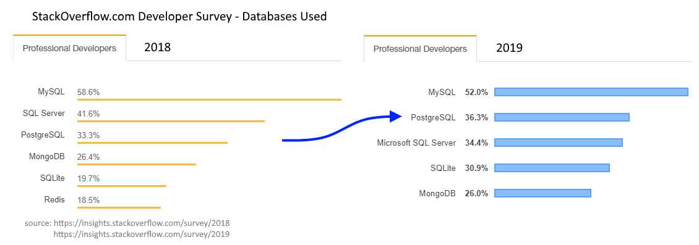

Postgres
The World's Most Advanced
Open Source Relational Database
Open Source Relational Database
What is Postgres?
- ACID Compliant RDBMS
- Cross Platform (Linux, Windows, BSD)
- Free and Open Source
- Highly Compliant to SQL Standard
- NoSQL Capabilities
- OLTP
- OLAP
- Extensible
A bit about me

- Igal Sapir
- Software Architect based in Los Angeles
- 20+ years of Data Driven, B2B & B2C applications
- Used many different DBMSs (SQL Server since 7.0)
- Open Source Advocate, Committer
- I help organizations worldwide with
- Performance, Scalability, and Security
- Save $$$ by adopting FOSS and improving efficiency
- Ad-hoc Development
- Training
What's in a Name? *
PostgreSQL
or
Postgres
PG
not
PostGres
PostGre
PostgresSQL
* One of the very few things of which the community can not reach an agreement
Why Open Source?
- The source code is the single source of truth!
- Anyone can read the code
- Ironically, makes it more secured
- Anyone can fix bugs
- Anyone can add features
- Possibly as an extension
- Better professional service!
- There is competition
- Sponsorship of product development
- Developers are loyal to the product
- Not the company
Are Open Source DBMSs Ready?
Open source database management systems are gaining in scalability, stability, maturity and adoption by third-party software vendors increasing the potential use in production environments.
Gartner, January 2008 (ID G00154215)
Open-source relational DBMSs have matured significantly and can be used to replace commercial RDBMSs at a considerable TCO saving. Information leaders, DBAs and application development management can now consider them as a standard choice for deploying applications.
Gartner, April 2015 (ID G00273643)
Commercial vs. Open Source DBMSs
Why Postgres?
- Reliable
- Scalable
- Performant
- Mature
- Well documented
- Free community support
- Professional support from many different vendors
- Not governed by any single organization
- Specialized Data and Index Types
- Popular (and Trendy!)
Trending RDBMS

Wide Adoption, Trending
StackOverflow.com surveys of ~100,000 developers show that Postgres has
become more popular than Microsoft SQL Server

Loved and Wanted
Postgres is the most Loved and most Wanted RDBMS
According to the 2019 StackOverflow Developer Survey
Does it scale?

At Adjust GmbH we have
5 – 10 Petabytes of data in Postgres
- Chris Travers, adjust.com, June 2019
Who uses Postgres?
We only know about the ones who publicize it

Who uses Postgres?
And the ones featured in case studies
MasterCard
Clear Capital
AT&T
HP
Sony
Skype
US Army
US Air Force
Vonage
GAP
BMW
UN
Bloomberg
Nokia
Goldman Sachs
A little bit of History
- Stemmed from the Ingres project
- RDBMSs project; UC Berkeley early 1970s
- Also spawned Sybase and... Microsoft SQL Server
- Post-Ingres project c. 1985
- POSTQUEL Query Language
- Released as Postgres95 in 1995
- Berkeley grad students Andrew Yu and Jolly Chen
- POSTQUEL replaced with a SQL parser
- Liberal license attracted more developers
- Renamed to PostgreSQL in 1996 (Or was it?)
- Nowadays hundreds of contributors from around the world
- Notable committers like Tom Lane and Bruce Momjian
Michael Stonebraker

Tom Lane
Bruce Momjian
Release Cycle
- Once a Year for a Major Version
- Lots of new features!
- At least 5 years support
- Data files are not backward compatible
- Two parts major versions until 9.6, e.g. 9.4, 9.5, 9.6
- Single part version numbering since 10, e.g. 10, 11, 12
- Usually a few Minor Updates throughout the year
- No new features
- Bug fixes
- Security patches (rare)
- Data files are backward compatible (rare exceptions)
Top Features Overview
- MVCC with different isolation levels
- Replication and HA solutions
- Forks and ad-hoc products
- TimeScale DB (time series data)
- GreenPlum DB (big data analytics and BI)
- PostGIS (spatial data for Geographic Information Systems)
- Citus (added sharding and replication features)
- ToroDB (NoSQL features and MongoDB integration)
Notable Operators
$$- Dollar Quoting-
select $$ This string can have "quotes" and apostrophe's and will only terminate when another set of two dollar signs are encountered $$ as input; ||- String concatenation-
select 'Hello' || ' ' || 'SQL Saturday'; ::- Cast-
select current_timestamp::text; ~- REGEX pattern match-
select 'String with 3 digit number 891 in it' ~ '\D\d{3}\D';
Data Types
- Numeric
- smallint, int, bigint
- decimal, numeric, real, double precision
- money
- smallserial, serial, bigserial
- Character
- varchar
- char
- text
Data Types
- Binary
- bytea
- Date/Time
- timestamp
- timestamptz
- date
- time
- interval
Data Types
- Boolean
- true | false
- Enum
- create type rating as enum ('hate', 'dislike', 'meh', 'like', 'love');
- provides type safety, CaSe sensitive
- maintains order for sort and comparisons, e.g. rating > 'meh'
- Geometric
- point, line, box, path, polygon, circle
- Network Address
- cidr, inet, macaddr
- Bit String
- bit, bit varying
Data Types
- Full Text Search
- tsvector
- tsquery
- Use the @@ operator
select to_tsvector('The quick brown fox jumps over the lazy dog');
> 'brown':3 'dog':9 'fox':4 'jump':5 'lazi':8 'quick':2
select to_tsquery('Foxes & Jumped');
> 'fox' & 'jump'
select to_tsvector('The quick brown fox jumps over the lazy dog')
@@ to_tsquery('Foxes & Jumped')
> true
Data Types
- UUID
- XML
- JSON
- Stored as original input text
- Ordered maintained
- Duplicate keys kept
- JSONB
- Parsed and stored as binary
- Order is lost
- Duplicate keys removed
- Provides NoSQL capabilities
- Indexable!
e.g.
select * from some_tbl where some_jsonb_col->user->>last_name = 'Sapir';
Data Types
- Array
- Keep a searchable list of elements, e.g. Tags
- Can be multi-dimensional, e.g. grid, cube, etc
- Range
- Numeric
- Timestamp
- Date
Index Types
- B-Tree
- Great for unique values or < and >
- Hash
- Useful for exact matches
- BRIN - Block Range Index
- Useful in huge tables
- GIN -Generalized Inverted Index
- Great for many duplicate keys, e.g. Full Text
- GiST - Generalized Search Tree
- Great for geographical and range types
- SP-GiST - Space Partitioned GiST
- Great for many duplicate prefixes
Indexing Strategies
- Use the right tool for the job
- The WHERE clause must match the indexes
- Expression indexing
- Partial indexing
create index ix_name on some_table using gin(some_column);
create index ix_email on users(lower(email));
...
select * from users where lower(email) = 'user@domain.org';
create index ix_invoice_id on invoices(id)
where is_open = true;
...
select * from invoices where is_open = true and ...;
Extensions
- Foreign Data Wrappers
- connect to other data sources, e.g. SQL Server
- pl/V8 JavaScript engine
- pg_trgm (fuzzy searching)
- pg_cron (scheduling)
- tablefunc (pivot tables with crosstab)
- many more on PGXN*
Procedural Languages
Write your UDFs and Procs in the language you or your team knows best:
- Built in languages
- pl/pgSQL
- pl/Tcl
- pl/Perl
- pl/Python
- Available as Extensiosn
- pl/V8
- pl/Java
- pl/R
- pl/PHP
- pl/Ruby
- pl/sh
"Standard" Features
- Schemas
- Tables
- Also Partitioned Tables
- Views
- Also Materialized Views
- Functions
- string_agg()
- generate_series()
- lots of great built in functions
- Stored Procedures
- Triggers
Notable Differences from SQL Server
- Identifiers are collapsed to lowercase
- You can use quotes to maintain case - Don't!
- Use snake_case instead of hungarianNotation or PascalNotation
- Character types are CaSe sensitive
- Use function expression e.g. lower() or the citext extension
- String concatenation operator is || and not +
- Data Types
Migration Considerations
- Downtime allowed?
- Minimize it by preparing everything in advance
- Downtime not allowed?
- Do initial migration
- Write to both databases until migration completes
- Use TDD
- Write test suite
- Test queries, functions, etc.
The Migrate2Postgres Tool
- Open Source tool I wrote
- Cross platform - written in Java
- Easy to use JSON config file
- Will generate DDL
- Will copy the data
- You will still have to
- Create indexes, functions, triggers, views, etc.
- More features might be added